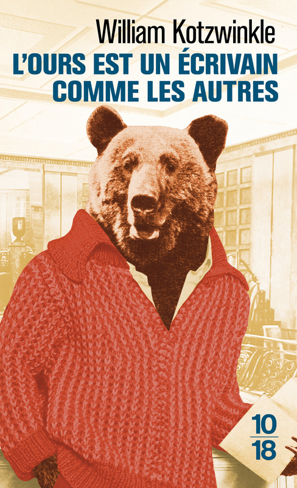

Apparemment en ce moment la trend c’est de revenir sur 2016. Alors plutôt que de parler de moi, ça m’a plutôt donné envie de me remémorer mes lectures de l’époque (ce qui revient globalement à parler de moi, mais différemment).

En science-fiction, c’est surtout l’année qui m’a vu découvrir le cycle de la Culture de Iain M. Banks et durant laquelle je me suis enfilé L’Homme des jeux, L’usage des armes et Une forme de guerre, signe clair que j’étais enthousiasmé par ma découverte de cet univers. Cette année-là j’ai aussi été marqué par Un cantique pour Leibowitz, un roman post-apo de Walter M. Miller sorti en 1960 dans lequel des moines tentent de sauvegarder ce qui reste de la connaissance humaine. Vivant à plein ma passion du moment pour l’exploration spatiale, j’ai lu le pavé Mars la Rouge, premier tome de La trilogie martienne de Kim Stanley Robinson - parue dans les années 1990 - qui nous fait suivre l’installation d’une colonie humaine sur Mars et la terraformation progressive de cette dernière, dans une optique plutôt “hard SF” et une grande attention donnée aux dynamiques sociales. Anecdote amusante : le début de la trilogie prend justement place en 2026. En plus léger, j’ai un souvenir pétillant de Au service surnaturel de sa majesté, de Daniel O’Malley, un roman d’urban fantasy dans une agence gouvernementale britannique secrète spécialisée dans le surnaturel.
2016 c’est aussi l’année de ma relecture de Moi qui n’ai pas connu les hommes, de Jacqueline Harpman, chef-d’œuvre féministe à tendance post-apo qui connaît depuis un regain d’intérêt aussi mérité qu’inattendu. À côté de ça, j’ai beaucoup ri grâce à L’Ours est un écrivain comme les autres, roman absurde de William Kotzwinkle dans lequel un ours s’approprie le travail d’un écrivain et rejoint le petit monde de la littérature et des médias. En parlant de littérature, Le Roi Pâle de David Foster Wallace m’a gentiment traumatisé avec ses notes de bas de page parfois longues de plusieurs pages. Quant à Putain de Mort, de Michael Herr, le récit d’un journaliste sur le terrain aux côtés des soldats pendant la guerre du Vietnam, il reste un texte difficile à oublier. Pour rester aux US, j’ai aussi lu Fear and Loathing on the campaign trail ‘72 de Hunter S. Thompson, récit très “personnel” et chaotique de la campagne électorale américaine de 1972 (qui a vu la réélection de Nixon contre le démocrate McGovern), avant que le résultat de celle de 2016 ne me dégoûte du sujet pour pas mal de temps.

Certains livres de cette année-là ne sont plus pour moi qu’une couverture dont le contenu m’échappe pour l’essentiel, sans parler de ceux que j’ai interrompus en cours de route ou que je n’ai pas aimés (une pensée pour Terminus Radieux, d’Antoine Volodine, que j’ai terminé au prix d’un effort qui n’était franchement pas nécessaire). Un constat : si 2016 a été une année assez peu prolifique en nombre de lectures (un peu plus d’une trentaine) par rapport à mon rythme actuel, on y compte les femmes sur les doigts d’une seule main (quatre, et tant qu’on y est citons-les : Jacqueline Harpman, Titiou Lecoq, Maïa Mazaurette et Marie Peltier). C’était avant que j’encode tous mes livres lus dans un tableau Excel et que le déséquilibre flagrant me saute aux yeux. En gros, 2016 est une année que je n’inscrirai pas forcément au panthéon de mes souvenirs personnels, mais dont il est possible de tirer quelques trucs intéressants.